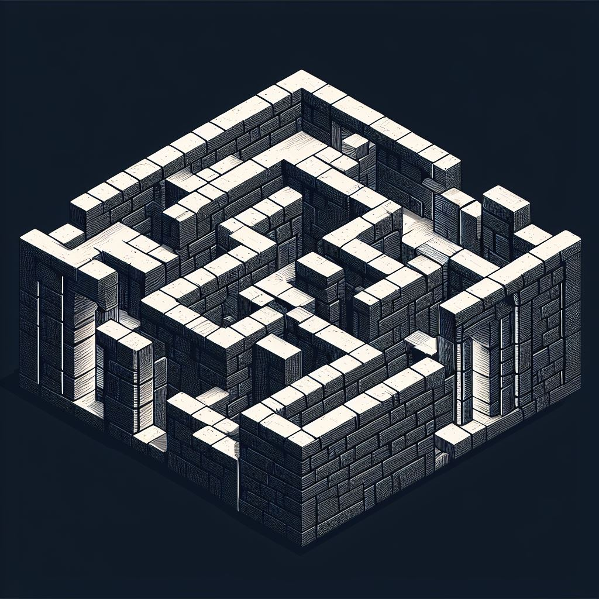
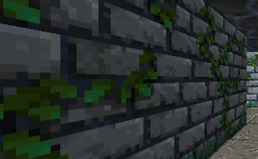
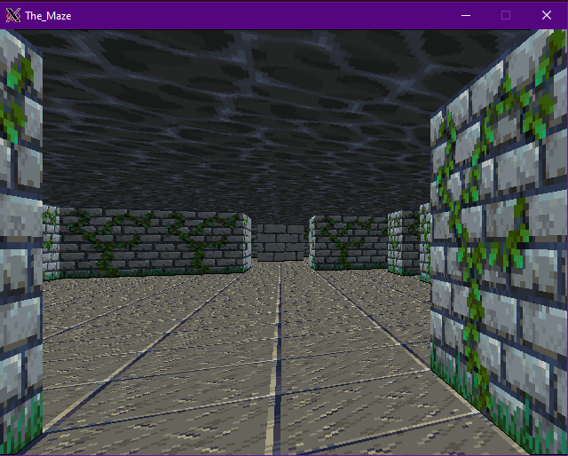
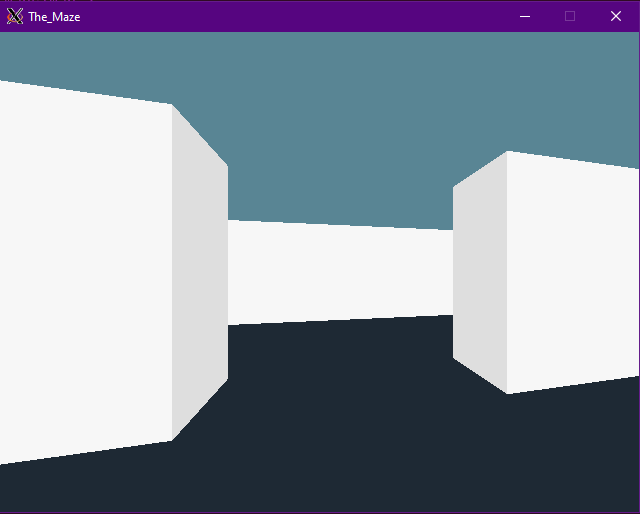
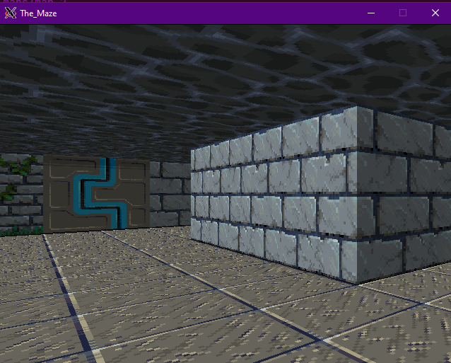
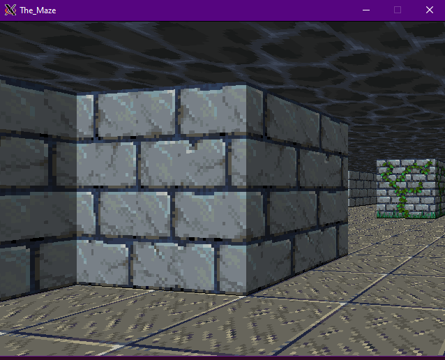

John Carmack
// Focused, hard work is the real key to success.
// Keep your eyes on the goal, and just
// keep taking the next step towards completing it.
// If you aren't sure which way to do something,
// do it both ways and see which works better.
The Maze is a small raycaster FPS wrote as an exercise in C and graphics(SDL2).
Features:
Features to be implemented:

   
The most important aspect of the game is raycasting.
Basically raycasting is a a rasterization technique which takes some shortcuts to make things faster in comparison to true 3D renderers.
Let's assume we have an environment with a bunch of walls, and we want to render it in first-person view. For each column of the screen, we do something like this:
If you want to see how its done, you can get the source code here.
Thank You